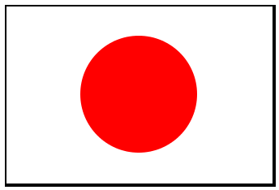

6.2.1
1.4 Harjoittele
Nyt sinulla on kaikki tarvittavat työkalut, jotta voit ohjelmoida Japanin ja Suomen lipun sekä auton.
1.4.1 Japanin lippu
Vinkki: Määrittele ensin lipun pohja ja "aurinko" define:llä, yhdistä ne lopuksi.

1.4.2 Suomen lippu
Vinkki: Lähde liikkeellee ristin osista, kokoa risti ja liitä se pohjaan.

1.4.3 Auto
Vinkki: Rakenna auto paloista, määrittele ensin yksi rengas. Määrittele sen avulla uusi kuva, jossa on kaksi rengasta. Määrittele kori ja lopuksi liitä renkaat korin kanssa samaan kuvaan.

Hauskoja koodaushetkiä!